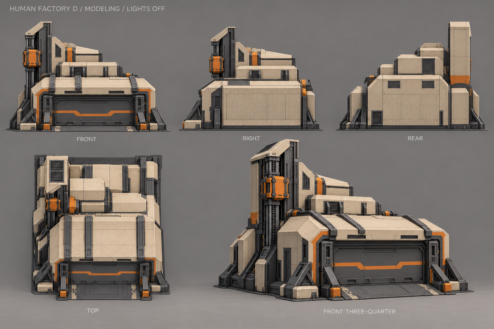
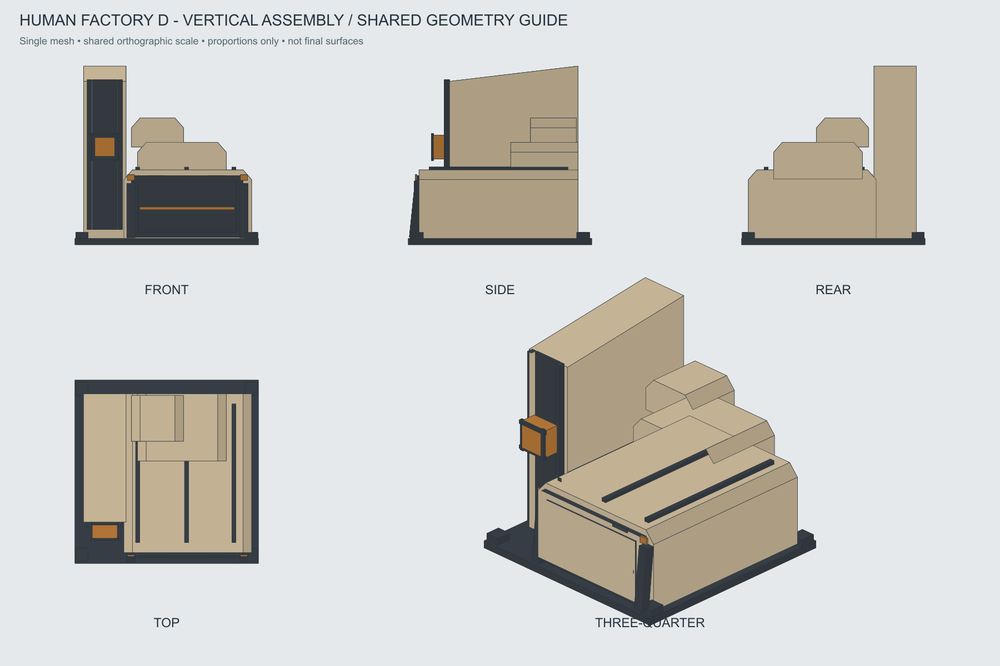

Завод · D «Вертикальная сборка»
Выбран 28 октября 2026. Высокий блок с одной подвижной кареткой, низкий выпускной зал и ступенчатые объёмы. Модельные референсы без свечения.
Паспорт моделирования · Входы для AI · Движение и состояния · OBJ · Варианты второго прохода
Основной нейтральный вид

Пять художественных ракурсов
Свет выключен, ворота закрыты. Лист содержит перспективные неточности: строгие проекции и расположение частей смотреть ниже.

Проекции одной геометрии

Отдельное превью хода каретки
Схема принципа движения, не готовая игровая анимация и не вход для AI-текстурирования. Движется только оранжевая каретка с зажимами. Направляющие, шахта и корпус неподвижны. Темп условный; работа следует прогрессу одной очереди.
Отмена запускает возврат к покою. Возврат к парковке и открытие ворот на выпуск настраиваются отдельно и не задерживают игровой результат.